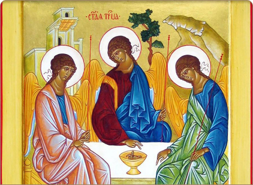
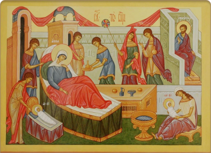

О вере и церкви
Здесь размещены материалы, которые должны помочь человеку обрести себя в Боге для дел праведности, истины и добра, приобщиться к духовному знанию. Ведь наряду с воспитанием и образованием человеку необходимо религиозное формирование, являющиеся важнейшим фактором преображения души. Отстутсвие в душе религиозного начала сказывается на ее духовной немощи, которая не позволяет человеку чувствовать себя полноценным членом общества, частью мира.
Помочь человеку увидеть свое высокое призвание, обрести смысл жизни, утвердиться в нравственном достоинстве и обрести радость надежды на вечную жизнь - таково основное предназначение предлагаемого раздела.
Верую...

Исповедание своей веры христиане излагают в Символе веры.
Символ веры — это молитвословие, в котором содержатся все основные положения и догматы Православной Церкви. Это учение в Символе веры изложено в краткой, но очень точной форме. Составлен он в IV веке отцами I и II Вселенских Соборов. Состоит он из двенадцати положений, или членов.
В Древней Церкви существовали Символы веры, но они были связаны преимущественно с катехизацией и крещением. С возникновением и усилением ересей (ложных учений о Боге) потребовалось составить более полное и догматически безупречное исповедание веры, которым могла бы пользоваться вся Вселенская Церковь.
I Вселенский Собор был созван в городе Никее (Малая Азия) по поводу лжеучения пресвитера Ария, который утверждал, что Сын Божий, Иисус Христос, сотворен Богом Отцом, является не Истинным Богом, а лишь высшим творением. Собор осудил эту ересь, изложил православное учение, составив первые семь членов Символа веры. На II Вселенском Соборе, созванном для осуждения ереси Македония, который отвергал Божество Святого Духа, были даны последующие пять членов Символа веры.
Взрослый человек, принимающий крещение, должен его произнести: для принятия этого Таинства и вступления в Церковь он должен иметь правильные знания о Боге и основах вероучения. При крещении младенцев Символ веры за них читают восприемники (крестные). Они также обязаны знать его наизусть и читать без ошибок. Выучить Символ веры несложно, ведь он входит в состав утренних молитв и каждый православный читает его, молясь по утрам. Также Символ веры поется за каждой литургией в храме всем народом. Человек, который регулярно молится по утрам и ходит в воскресные и праздничные дни на литургию, очень скоро его запомнит.
Пасха
Радуйтеся. Се Аз с вами есмь во вся дни до скончания века
(Мф XXVIII, 9;20)
Слово Пасха в переводе с еврейского означает «избавление», «исход». Евреи, празднуя ветхозаветную Пасху, вспоминали об освобождении предков своих от рабства египетского. Христиане же, празднуя Пасху новозаветную, торжествуют избавление через Христа всего человечества от рабства дьяволу и дарование нам жизни и вечного блаженства. Празднуют исход от небытия к бытию, от ада на небо, от смерти и тления, приобретенных первыми людьми Адамом и Евой в результате грехопадения, к бессмертию, которое и является первоначальным и естественным состоянием человека.
Пасха — это исход человеческой жизни через восстание Христово из мертвых к ее Началу — вечной жизни. По важности благодеяний, полученных нами через Воскресение Христово, Пасха является праздником праздников и торжеством из торжеств, почему и богослужение сего праздника отличается величием и необычайной торжественностью.
В первый день после субботы, рано утром, сделалось сильное землетрясение. С неба сошел Ангел Господень; вид его был как молния, а одеяние белое, как снег. Он отвалил от двери гроба камень и сел на нем. Господь же Иисус Христос воскрес из мертвых. Воины, стоявшие на страже, от страха попадали на землю, как мертвые, а потом разбежались. Некоторые из них пришли к первосвященникам и рассказали им о случившемся. Первосвященники же дали им денег и научили говорить, будто бы ночью, когда они спали, ученики Иисуса Христа пришли и украли Его тело.
Когда начало светать, Мария Магдалина и с нею некоторые благочестивые женщины пошли ко гробу с благовонным миром, чтобы помазать тело Иисусово. Дорогою они говорили между собою: Кто отвалит нам камень от двери гроба? (Мк 16,3). Прежде других ко гробу подошла Мария Магдалина, но когда увидела, что камень отвален от гроба, побежала назад к Петру и Иоанну и сказала: Унесли Господа из гроба, и не знаем, где положили Его (Ин 20, 1—2). Вслед за Марией Магдалиной пришли ко гробу и прочие мироносицы и увидели Ангела, который сказал им: Вы Иисуса ищете Назарянина, распятого; Он воскрес, Его нет здесь. Вот место, где Он был положен (Мк 16, 6). Мироносицы в страхе побежали назад. На дороге им явился Сам Иисус Христос и сказал: Радуйтесь! И они, приступивши, ухватились за ноги Его и поклонились Ему (Мф. 28, 9).
Источники: 1.Прот. Г. Дебольский. Дни Богослужения Православной Церкви. Минск, 2002 (по изданию 1901г.);
Двунадесятые праздники
-
Рождество Христово
25 декабря/ 7 января
-
Крещение Господне
6 января/19 января
-
Сретение Господне
2 февраля/15 февраля
-
Благовещение Богородицы
25 марта/7 апреля
-
Входа Господня в Иерусалим
-
Вознесение Господне
-

День Святой Троицы
-
Преображение Господне
-
Успение Богородицы
-

Рождество Богородицы
-

Воздвижение Креста Господня
-

Введение во Храм Богородицы
21 ноября/4 декабря